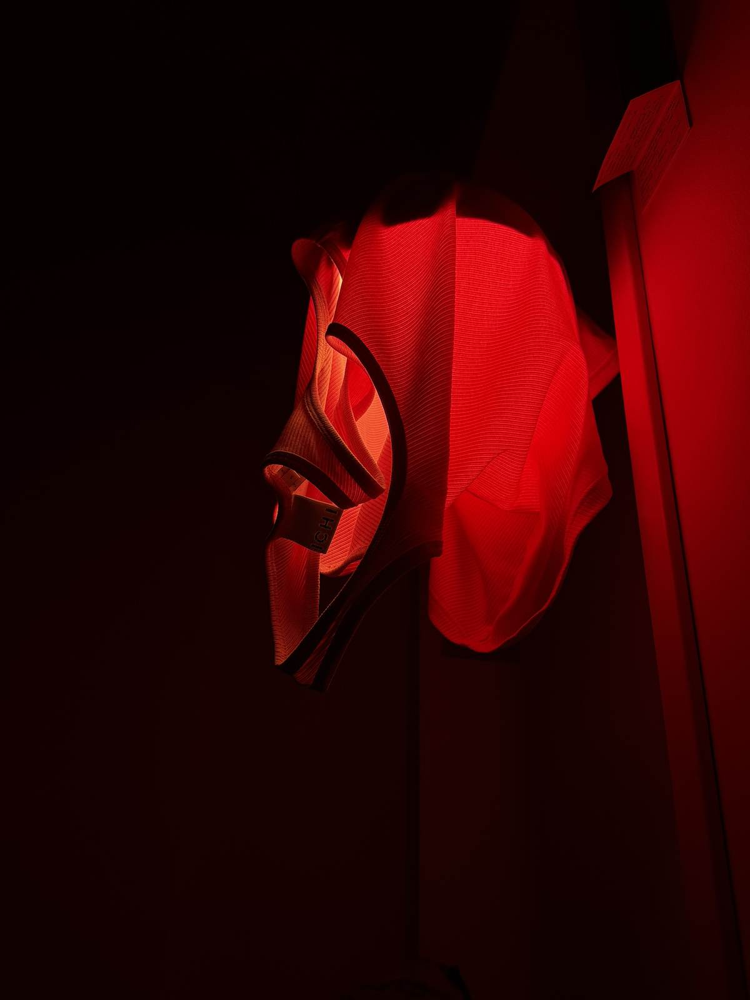
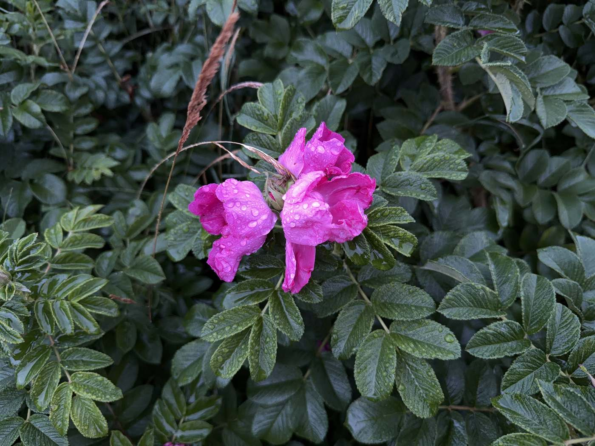
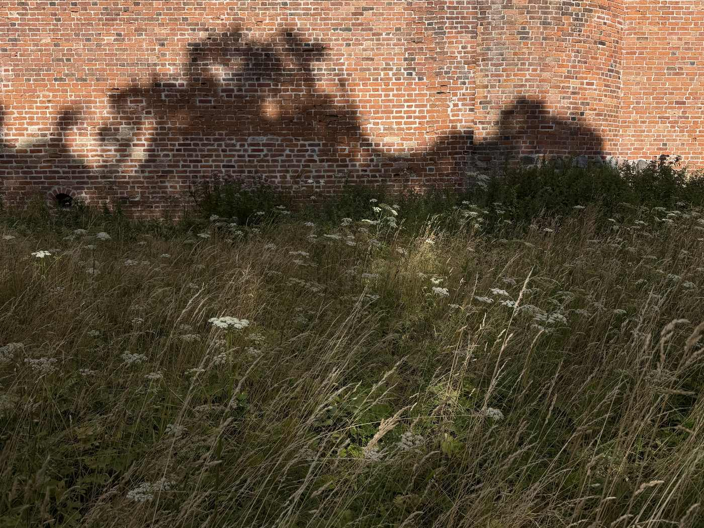

a crt mask over the whole page: horizontal beam gaps crossed with vertical rgb phosphor triads, both multiplied, with the beam driven harder underneath to pay for what the mask absorbs. every number is in the panel — pull them apart and see which one is doing the work. the mask is fixed to the viewport, so the picture scrolls behind it.
test card — flat fields and fine pitch. the wedge beats against the triad; the staircase shows where the mask crushes the low end. push convergence to see the channels separate.

one saturated hue against deep black. the grille has almost no green or blue to filter, so the triads read as red dashes and the falloff bands break up.

two hues far apart on the wheel. the magenta lands between two phosphors and the dark foliage sits where gap depth decides whether detail survives at all.

broadband colour and fine detail. the grass is finer than the line pitch — the worst case for a mask, and where softness earns its keep.